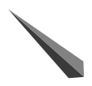
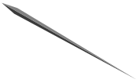
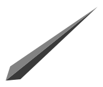

<router-outlet></router-outlet>
<div class="layout">
    <div class="outer-circle">
      
    </div>
    <div class="inner-circle">
      
    </div>

    <div class="hour"  [ngStyle]="{'transform': getHourStyle()}">
      
    </div>
    <div class="second" [ngStyle]="{'transform': getSecondStyle()}">
      
    </div>
    <div class="minute"  [ngStyle]="{'transform': getMinStyle()}">
      
    </div>
</div>